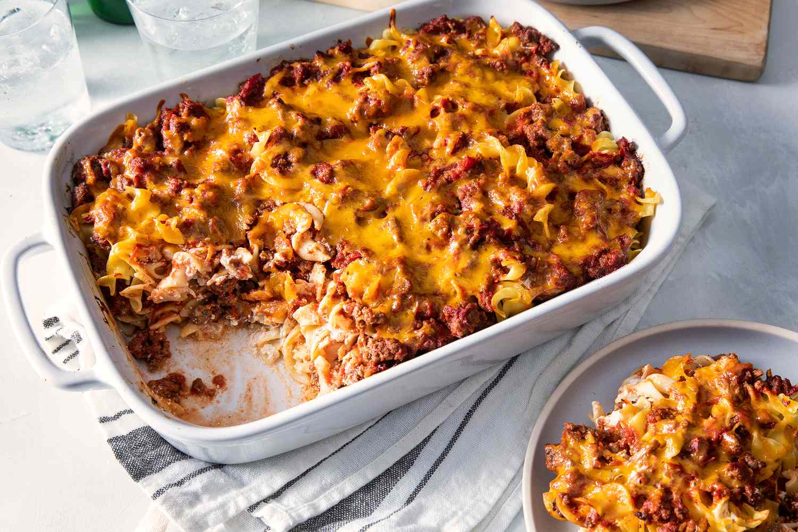

Ground Beef Casserole

Yummy Ground Beef Casserole
My grandmother's old-fashioned hamburger casserole is comfort food at its best! Featuring ground beef, noodles, and a creamy cheese sauce, this simple recipe dates back to the 1940's. I've tweaked the amount of cheese and sour cream depending on what I've got in the fridge and it always turns out great! My mother has suggested this was made up as a way to use up ingredients in the fridge.
Ingredients
Here's what you'll need to make this old-fashioned ground beef casserole:
- Ground Beef: Of course, you'll need ground beef for this casserole. The recipe calls for about one pound.
- Tomato Sauce: Canned tomato sauce adds flavor and helps bring the casserole together.
- Seasonings: White sugar, salt, and garlic salt are used to add flavor to the tomato sauce.
- Pasta: Egg noodles work best for this old-fashioned ground beef casserole, but you can substitute whatever noodles you have on hand.
- Sour Cream and Cream Cheese: Sour cream and cream cheese make the casserole extra rich and creamy. Plus, they add a bit of pleasant tang.
- Onion: A diced white onion kicks the flavor and texture up a notch.
- Cheddar Cheese: Shredded Cheddar cheese is sprinkled on top of the casserole to create a decadent finish. You could also use shredded Monterey Jack to turn the heat up a notch.
Directions
- Heat a large skillet over medium-high heat. Cook and stir ground beef in the hot skillet until browned and crumbly, 5 to 7 minutes; drain and discard grease.
- Mix tomato sauce, sugar, garlic salt, and salt into the ground beef; simmer until flavors blend, about 20 minutes. Remove from the heat, cover the skillet, and cool to room temperature.
- While the sauce is cooking, bring a large pot of lightly salted water to a boil. Cook egg noodles in the boiling water, stirring occasionally until cooked through but firm to the bite, 7 to 9 minutes. Drain.
- While the egg noodles are cooking, preheat oven to 350 degrees F (175 degrees C). Grease a 9x13-inch casserole dish.
- Mix sour cream, cream cheese, and onion together in a bowl.
- Layer 1/2 of the egg noodles into the prepared casserole dish. Top with 1/2 of the sour cream mixture, then 1/2 of the ground beef mixture. Repeat layers once more. Sprinkle Cheddar cheese over top.
- Bake in the preheated oven until cheese is melted and golden brown, 25 to 30 minutes.